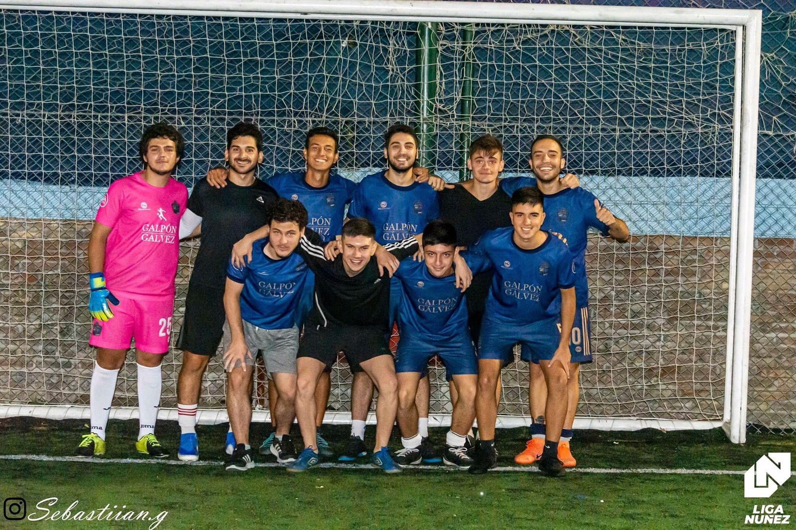
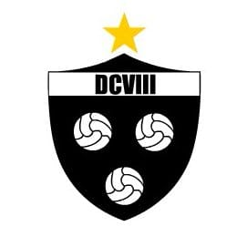
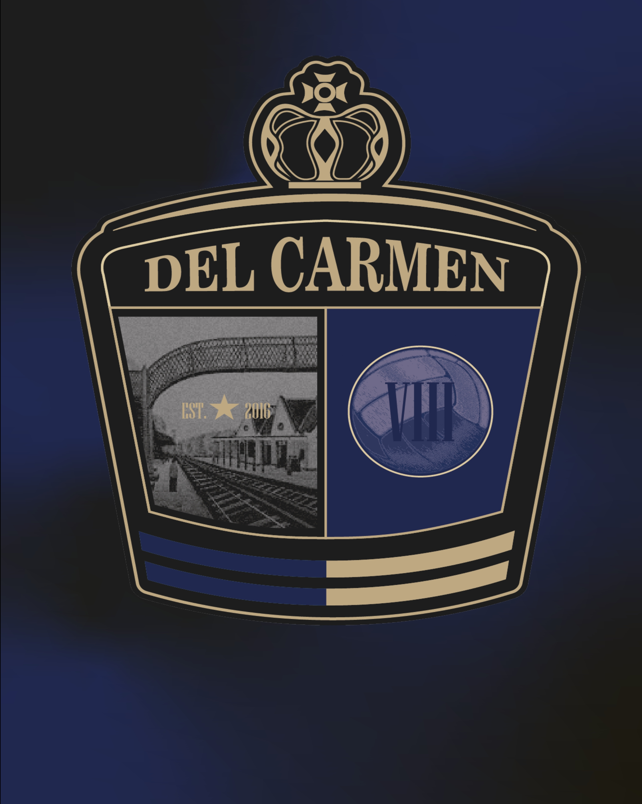
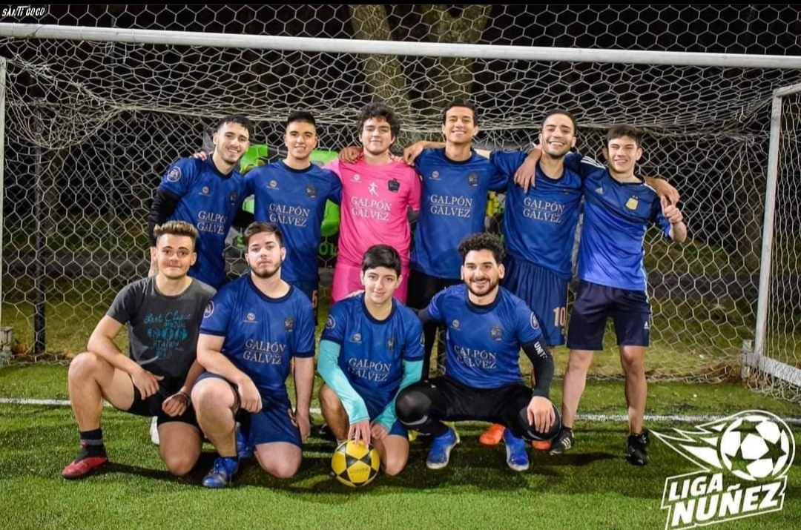
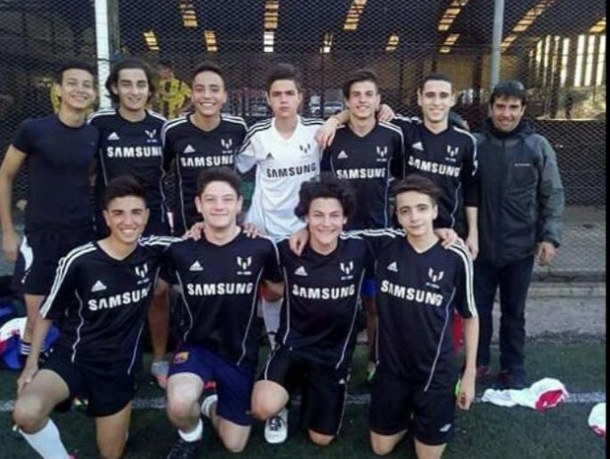
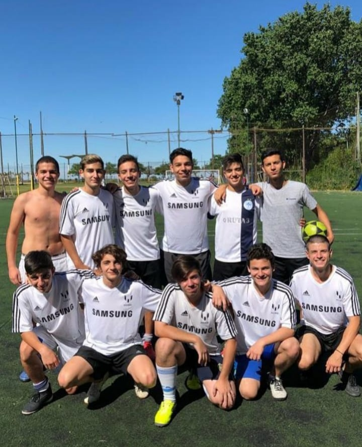
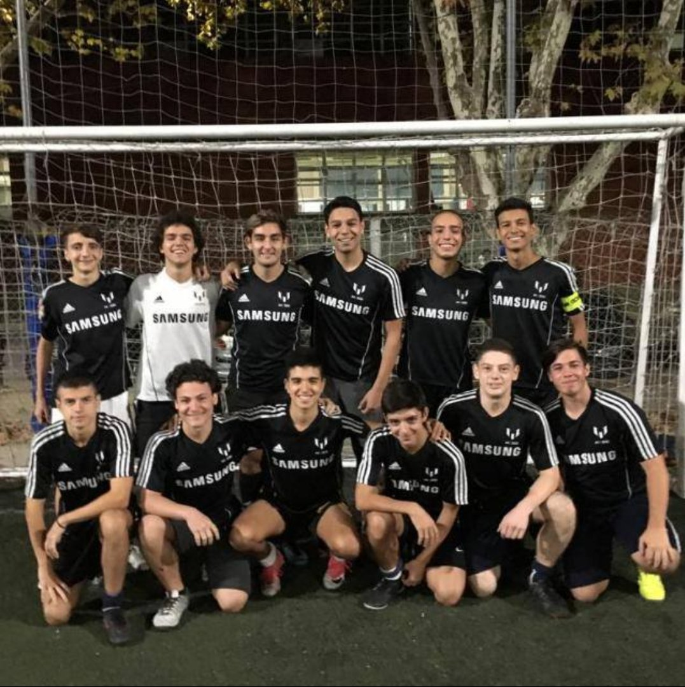
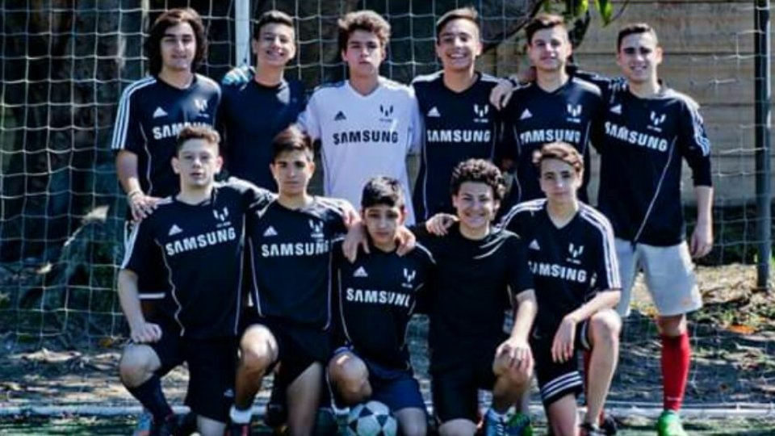
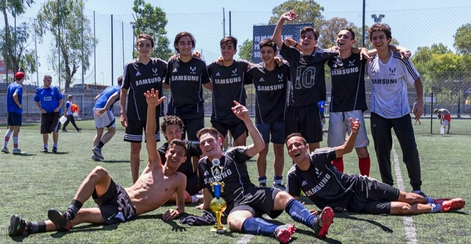
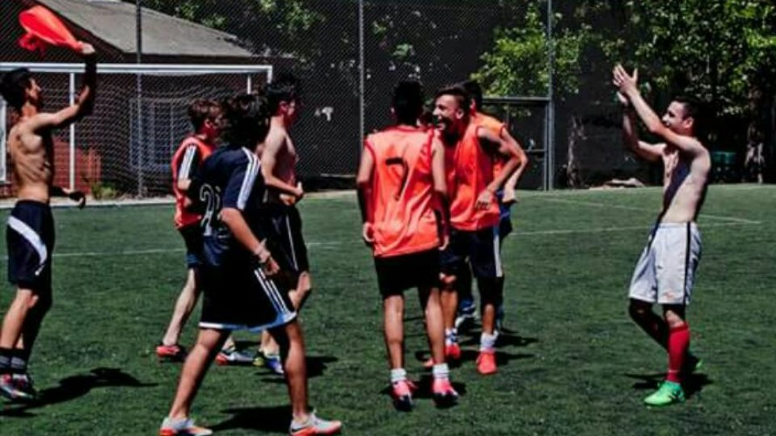

Del Carmen VIII es un quipo de fútbol. En realidad no. En realidad es algo más que un simple equipo de fútbol. "El delca" fue creado en diciembre de 2016 de pura casualidad. Un día normal en el colegio (15 años tenían los jugadores), Toto Ducrot, en vez de preguntar: "¿alguien más tiene sueño?" o "¿Cuánto falta para el recreo?, preguntó: ¿Y si hacemos un equipo de fútbol? Dicho y hecho. Ese día nos pusimos manos a la obra, y de ahí hasta la fecha nunca paramos.
En éste sitio, te vamos a contar un poco de nuestra historia, nuestra actualidad, y por qué Del Carmen VIII no es solo "un equipo de fútbol cualquiera"
ESCUDO
El escudo del Delca empezó siendo una informalidad, creado por uno de nosotros con alguna aplicación fácil de utilizar. Portaba los colores blanco y negro, que representaron al equipo desde su fundación.
Luego, para no ser la excepción a los otros aspectos del club, el escudo evolucionó.
Nos pusimos en contacto con Bernabé, quien fue nuestro profesor de diseño gráfico en el colegio, y él nos regaló nuestro hermoso escudo que hoy por hoy llevamos en el pecho cada vez que salimos a la cancha.
Nuestro emblema tiene los colores azul oscuro, dorado, y negro (este último por los viejos tiempos). Se puede ver la estación de Coghlan, barrio del cual provenimos, y una pelota con el VIII que nos caracteriza desde el primer día.
¡Qué diseño te mandaste Berna!¡Qué lindo es nuestro escudo!


CAMISETA

Con respecto a las camisetas, empezamos sin ninguna. No, no jugabamos con el torso al desnudo, sino que nos prestaban pecheras. Un día "gato" nos dijo que Dani (su papá y nuestro DT en algún momento de nuestra historia) había conseguido unas camisetas de samsung. Una negra, que usaríamos de titular, y una blanca, suplente. Con esas camisetas jugamos durante muchas temporadas, y hasta salimos campeones. Tanto afecto le agarramos, que la negra fue para un cuadrito, y la blanca... ¡Aún es nuestra camiseta suplente!
Al tener el nuevo escudo, era necesario renovar la pilcha. Y así fue. Toto diseñó (con la ayuda de Juan y el apoyo emocional e incondicional de todos los pibardos) la camiseta definitiva del delca.
El auspicio de "Galpón Gálvez" se concretó tras las negociaciones con Lorenzo Schiavo, arquero y carpintero. También buena persona.
Solemos escuchar halagos en los pasillos de la liga sobre la belleza de nuestra casaca. Imaginense que para nosotros es aún más linda por lo que no pueden alcanzar los ojos.
Parecida a la francesa, así que... ¡nous allons toujours!
TIFA

TIFA fue nuestro primer hogar deportivo, con sus sedes en Ciudad (te amamos Ciudad), Grun, Asturiamo, y Obras. Nos anotamos para el apertura del 2017, pero a fines de 2016 empezamos a jugar nuestros primeros amistosos, para familiarizarnos con las dimensiones de una cancha de ocho, empezar a entrar en ritmo competitivo, etc.
No nos demoramos mucho, ya que en el clausura del 2017, ya gritabamos CAMPEÓN.



CAMPEONES

Cómo olvidarlo... ese torneo fuimos con diferencia el mejor equipo de todos, ganandole prácticamente a cada uno de nuestros rivales, pero nuestro mayor error fue confiarnos.
En la última fecha jugábamos vs Phillips, creyéndo que ya éramos campeones fuera cual fuera el resultado. Le sacabamos 3 puntos a nuestro perseguidor (Fasta) y muchos goles de diferencia. Esa tarde invitamos a nuestros familiares, amigos, novias, a festejar. Pero no hubo festejo.
Caimos derrotados por 5-2, y pese a que creiamos que igual nos darían el trofeo, no leímos la letra chica del reglamento. Diego Michellini nos explicó que en instancias finales (descensos o definiciones de campeonato), no influían los goles de diferencia. Teníamos que ir a un desempate vs Fasta para ver quién era el mejor equipo del torneo.
Y el delca siempre lo fue.
Un 26 de noviembre de 2017, tras ganar el desempate por 3-0, fuimos campeones, para luego ir a festejar a la casa de pache, el campeonato y los 16 años de lolo.
De TIFA no solo nos llevamos un trofeo, sino que también un montón de buenos momentos y grandes anécdotas.
